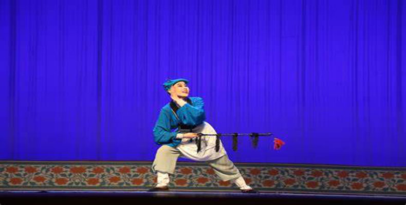

王小二赶脚
 1、名称由来：王小二赶脚又名“王小赶脚”，这一名称直接点明了剧中的主要人物 “王小” 以及他所从事的 “赶脚” 职业，即赶着毛驴供人雇佣出行。
2、创作渊源：
该剧最早出现在《什不闲全词》之中，1900 年时殿元首次将琴书段子搬运过来改为化装演出，1935 年秋，邓洪山在百代唱片公司灌制《王小赶脚》，成为五音戏的开山剧。
3、剧情介绍
雇驴讲价：
怀有身孕的农村小媳妇二姑娘在六月三伏天回娘家探亲，她与赶脚的王小从婆家起程到娘家。两人碰面后就雇毛驴的价格展开讨价还价，王小想通过攥手伸手指头的方式占二姑娘便宜，二姑娘则要求明着讲价，最终讲到一百六十个钱时，二姑娘不再添钱，王小便使坏咒她，二姑娘便要另找别人，最后还是跟王小定下了价格。
途中波折：
上路不久，二姑娘身体不适，王小得知她有病后打算不去了，因为之前有病人骑着毛驴半路去世让他吃了官司。二姑娘随后告诉王小自己是怀有身孕，于是两人说说笑笑继续赶路。
到达娘家：
快到张家湾的时候，二姑娘到一个交叉路口猛然打了驴一鞭跑了，王小询问幕后人二姑娘去哪了，幕后人才告知他二姑娘往南去了，让他快往东撵，原因是东边的高粱地里有条小道可以到二姑娘家。王小到了张家湾二姑娘家后，为了驴钱的事儿，两人又讨价半天，最后二姑娘多给了他二十，总共一百八让他路上打打尖。
4、艺术特色
角色塑造：
剧中一丑一旦两个角色，性格鲜明。王小是个天真烂漫、有点贫嘴甚至油嘴滑舌的小青年，二姑娘则是性格开朗、爱说爱笑，展现出农村小媳妇的活泼与纯朴。
表演风格：
表演朴实自然、逼真生动，极具生活气息。演员通过细腻的表情、动作和唱腔，将剧中人物的情感和性格特点展现得淋漓尽致，如二姑娘的羞涩、俏皮，王小的憨直、机灵等，让观众仿佛看到了生活中真实的人物形象。
唱腔特点：
五音戏的唱腔婉转，极具民间口头文学特点，素有 “北方越剧” 之称。《王小赶脚》的唱腔酸中带甜、婉转细腻，具有独特的韵味，演员在演唱时运用了丰富的装饰音和滑音，使唱腔更加优美动听，富有感染力。
语言特色：
唱词和对白多采用山东地区的方言土语，通俗易懂、诙谐幽默，充满了浓郁的乡土气息，如 “小黑驴儿真人爱，蹦蹦哒哒的真有趣儿” 等，让观众倍感亲切。
5、文化价值
地域文化展示：
生动展现了鲁中地区醇厚朴素的民风民情、自然风光以及人们的生活方式，是研究山东地区传统文化、民俗风情的重要资料。
艺术传承价值：
作为五音戏的经典剧目，承载着五音戏的艺术精髓和表演传统，对于五音戏的传承和发展起到了重要的推动作用，培养了一代又一代的五音戏演员和观众。
情感共鸣与教育意义：所传达的对美好生活的憧憬和向往，以及人与人之间纯真、质朴的情感，能够引起观众的情感共鸣。同时，剧中展现的人物品质和生活态度，也具有一定的教育意义，让观众在欣赏戏剧的同时，受到启发和教育。。
(图片来自zhuanti.cnjiwang.com)
点击图片即可观看！